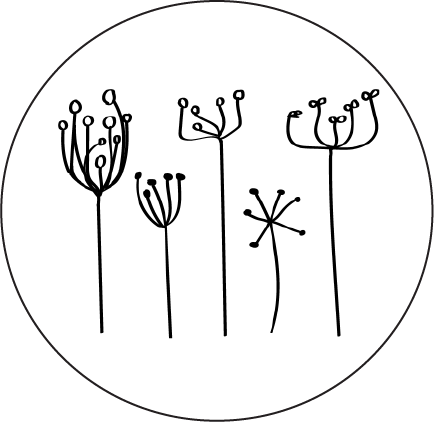

Handcrafted gifts and products made from natural fibres
I enjoy all things fibrey. Whether paper, cotton or wool they all have natural product appeal. I enjoy creating a wide range of items for both gifting and slow-crafting adventures. All our handmade items can all be upcycled, recycled and are 99.9% compostable.
Papery things
- Recycled paper bead necklaces
- Handmade paper
- Gifts cards – stamped with envelope
- Gift cards – decorated handmade paper with envelope
Cottony things
- Wash cloths
- Soap saver with soap
- Braided cotton bracelets
Woolly things
- Fibre batts
- Hand-spun yarn
- Hand dyed yarn
- Knitting accessories (pom poms and stitch markers)
- 100% NZ wool knitted apparel (hats, gloves and baby wear)